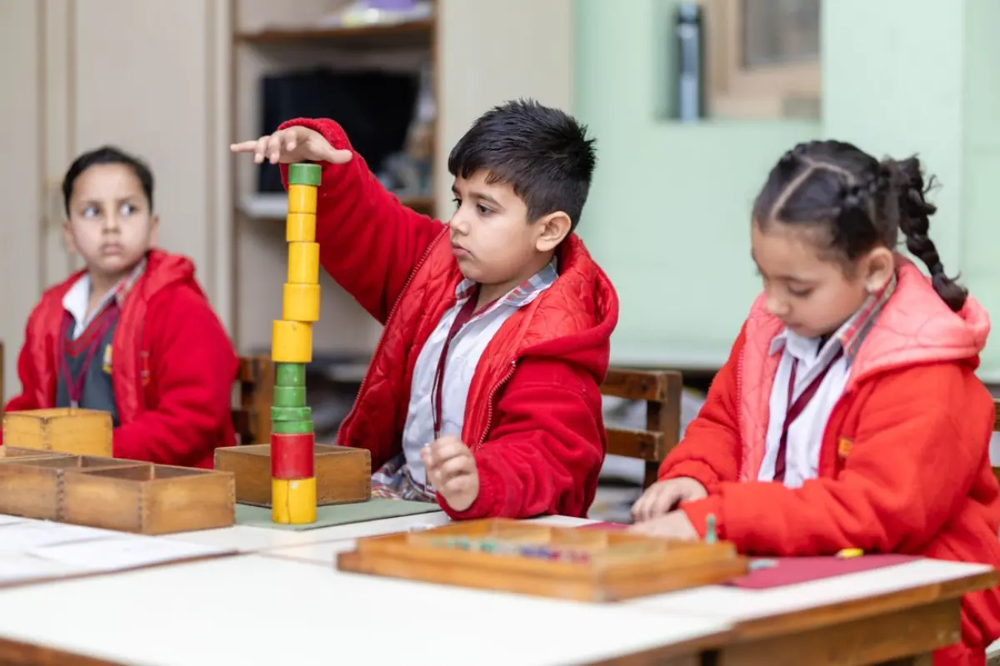
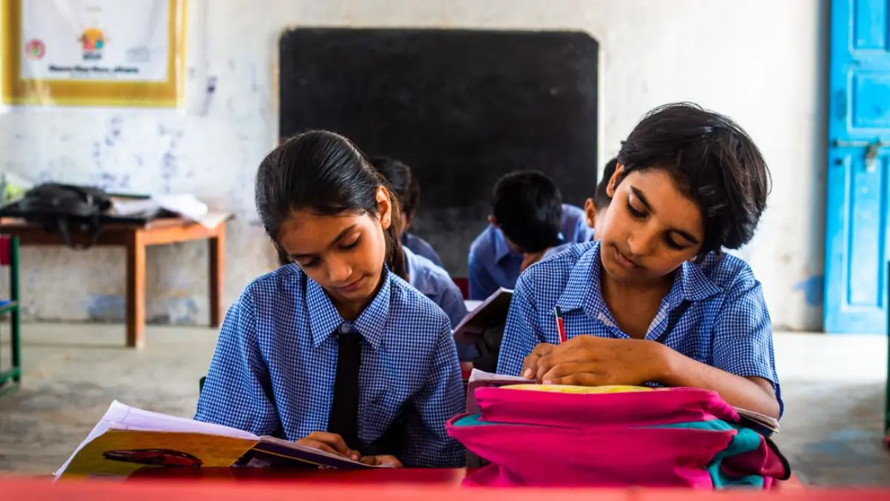
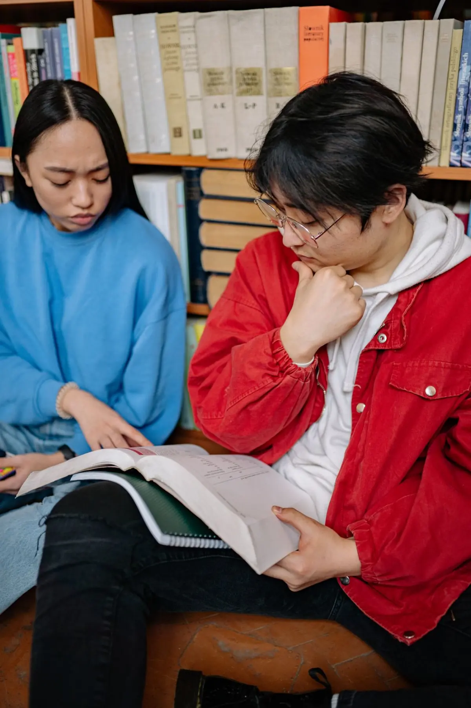
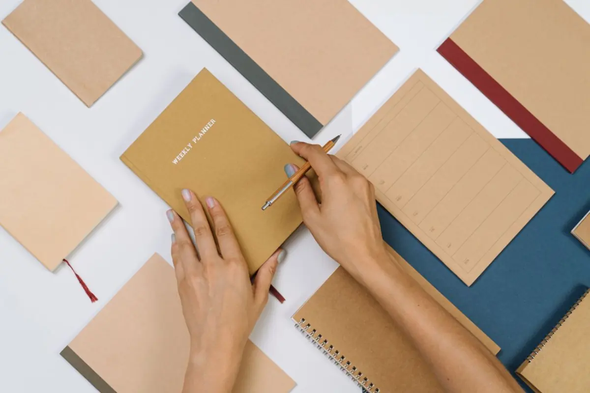

Build a love for learning
Reading, tables and number sense through games and short, playful sessions — never more than 45 minutes at a time.
2 days a week45-min classes
Explore subjects Your neighbourhood. Your learning community.
After school, a new kind of learning begins. Find your rhythm in a small, supportive class where every question matters.
Find your learning path
Start where you are
Four class bands, each with its own pace, materials and tutor. Pick the one your child is in today.

Reading, tables and number sense through games and short, playful sessions — never more than 45 minutes at a time.

The year subjects get harder. We rebuild the basics while keeping pace with school — so nothing quietly slips.

Board technique on top of real understanding: past papers, marking schemes and timed practice from term two.
Subject-specialist tutors for Physics, Chemistry, Maths, Biology, Accounts and Economics, plus open study hours.
Inside a session
No lectures into the void. Every class follows the same rhythm, so students always know what is coming next.
Our learning spaces
More than classrooms — an academic hub built for asking questions out loud and studying properly.
Arrive 30 minutes early or stay late and work through the homework you are stuck on, one-to-one with a mentor on duty.
Mind-maps, periodic tables and derivation walls around the room, so revision happens just by looking up.
Guided small-group sessions where students explain concepts back to each other — the fastest way to find out what you really know.
A week at Northstar Tutoring
The same shape every week, so studying stops being a decision and starts being a routine.
Explore a new concept with your tutor.
Work through examples as a small group.
Practise independently with guided support.
Clear doubts before they become gaps.
Reflect, revise, and plan your next step.
Transparency & trust
Progress is a shared job between student, tutor and family — so you never have to ask how it is going.

Attendance, homework completion and concept mastery, written in plain language and emailed to you every second Friday.
A scheduled sit-down with the lead subject tutor each term to review milestones and agree what to target next.
Fixed calling hours every week so you can reach your child’s batch coordinator directly, without going through a front desk.
Merit & recognition
We celebrate hard work as much as high scores. Our monthly ‘Star Improver’ award goes to the students showing the most diligence, curiosity and measurable personal progress.
Enquire or book
Send us your child’s class and the subject you are worried about. We will reply with two or three batch options and a tutor introduction.